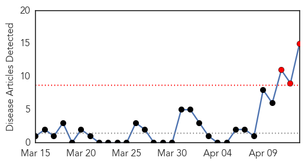
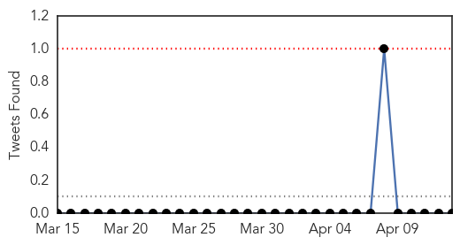
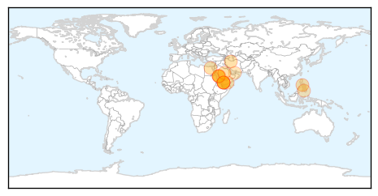
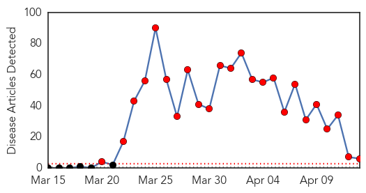
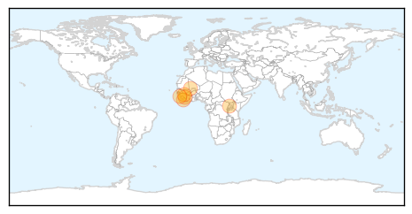

MERS
30-Day Web Trend
3 alerts, 0 warnings

30-Day Twitter Trend
0 alerts, 0 warnings

Article Locations
Article Confidences

Top Articles:
- 1.000
- Foreigner dies of Mers in Saudi Arabia, 8 infected
- 0.999
- Foreign Man Dies of MERS Virus in Saudi Arabia
- 0.999
- Farsnews
- 0.998
- Yemen reports first case of deadly MERS coronavirus
- 0.997
- MERS coronavirus appears in Yemen for the first time, possible virus mutation suggested
- 0.997
- the edge of knowledge
- 0.995
- 'Abu Dhabi schools free of Mers virus' - Emirates 24
- 0.993
- MERS-related death prompt fears of outbreak in Yemen why do women cheat on husbands why husband cheat read how many women cheat on husbands online click read here link website hiv and aids statistics
- 0.991
- MERS kills one in Saudi Arabia
- 0.964
- Schools in Saudi Arabia allay MERS fears Bhatkallys.com
- 0.962
- MERS takes foreigner’s life
- 0.839
- Pinoy health workers urged to take precautions vs MERS
- 0.825
- Filipino medics warned over UAE Mers
- 0.796
- Differentiating between real and fictitious amid fears
- 0.589
- MERS campaign calms nerves
Top Tweets:
-
No tweets found for Apr 13, 2014
Ebola
30-Day Web Trend
24 alerts, 0 warnings

30-Day Twitter Trend
14 alerts, 0 warnings

Article Locations
Article Confidences
Top Articles:
- 1.000
- How Dangerous Is Ebola?
- 1.000
- Killer virus and international travel and tourism: Virologists say they are deeply worried
- 0.999
- Aid Groups Take Emergency Steps against Ebola Onslaught — Naharnet
- 0.999
- Health workers in West Africa respond to Ebola outbreak
- 0.985
- Global Research - Centre for Research on Globalization
- 0.964
- Not everyone who contracts Ebola dies – a testimony
Top Tweets:
-
No tweets found for Apr 13, 2014